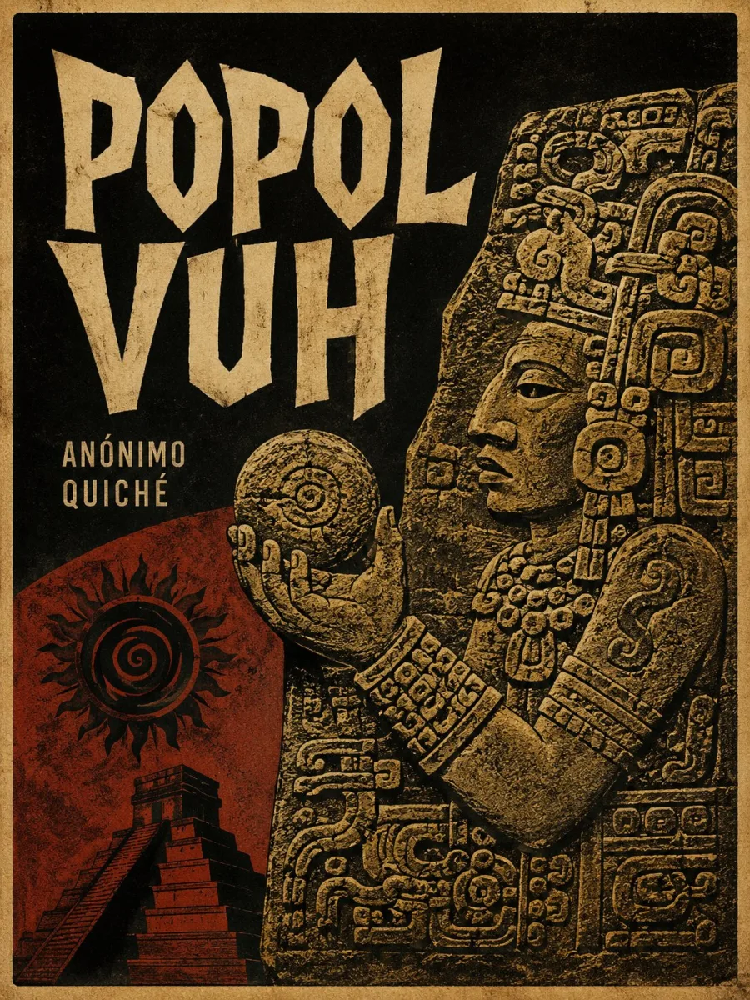

Escucha ahora
SINOPSIS
El texto sagrado de los quiché de Guatemala, transcrito en el siglo XVI a partir de tradición oral y pictórica mucho más antigua. Narra la creación del mundo por los dioses —tras varios intentos fallidos con hombres de barro y de madera— hasta llegar a los hombres de maíz, y las aventuras de los Héroes Gemelos, Hunahpú e Ixbalanqué, que descienden a Xibalbá, el inframundo, para vencer a sus señores.
CAPÍTULOS
Preámbulo y la creación del mundo
Los hombres de barro y de madera
Hunahpú e Ixbalanqué: el nacimiento de los Héroes Gemelos
El descenso a Xibalbá
Los hombres de maíz
RESEÑAS

Bueno